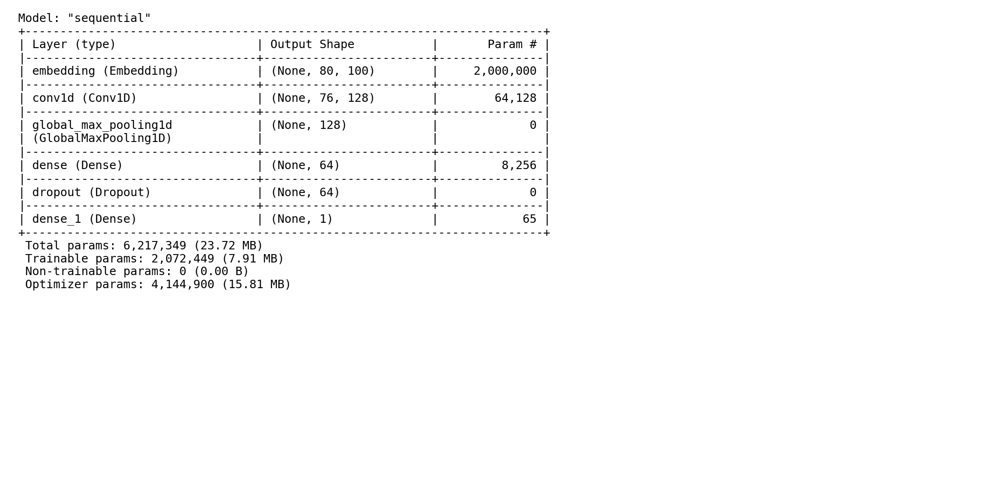

Binary classifier on SMS-style text using the dataset’s spam / not-spam labels. The output is P(bulk-style): resemblance to bulk or automated messaging in training, not danger, scams, or “malicious intent.”
Built with GloVe embeddings and a Conv1D stack in TensorFlow/Keras. Held-out accuracy about 98.7% on the exported run. The portfolio demo calls a backend API (e.g. Hugging Face Space) that loads outputs/dl_model.keras and tokenizer.json.
After training, weights are frozen. Each request tokenizes input, pads to max_len, and runs one forward pass to a sigmoid probability. Outputs are only as reliable as the training distribution and thresholding strategy (see limitations).
Text → token ids: Keras tokenizer maps tokens to indices. The OOV bucket handles unseen words (slang can lose signal).
Shape (batch, N): Sequences padded to length N consistently with the saved checkpoint.
CNN on text: Conv1D captures local n-gram patterns. Global max pooling aggregates over the sequence.
Threshold: Probability compared to a cutoff for the displayed label. Changing the cutoff trades precision and recall.

Architecture diagram not present. It can be generated from the Keras export in the repository.
Keras model graph (from export script in the repo).
Bag-of-words baselines (e.g. TF–IDF + linear or Naive Bayes) ignore word order. This model uses Conv1D layers so short phrases and local context contribute, which fits templated spam language.
Approach
Uses order?
Test accuracy (this export)
TF–IDF + linear / NB (typical baseline)
No
Not logged in this export (same-split comparison would require an additional baseline run)
Tradeoff: more compute than sparse linear baselines but lighter than Transformer-scale models. The demo surfaces measured per-request latency from the API.
Lightweight CNN over token embeddings: convolutions, pooling, dense layer, sigmoid. Classic discriminative text model (not generative).
Training data
Combined public labeled corpora (SMS and email-style spam/ham, phishing-style samples), merged and deduplicated for mixed writing styles. Sources are under training_data/ in the repository.
Evaluation
Stratified train/test split. Each run writes metrics and per-message predictions under outputs/ (e.g. metrics_dl.csv, test_predictions_dl.csv). Reported numbers refer to the exported run packaged with the repo.
Confusion matrix / ROC / PR figures when generated from the training notebook
Limitations
Static training data does not cover evolving scams. High offline accuracy does not imply complete coverage of phishing or smishing in production environments.